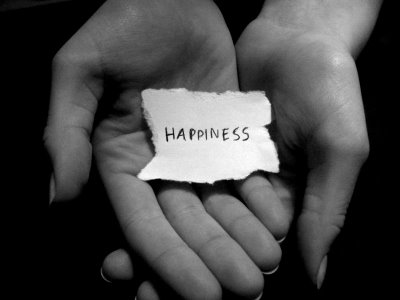

*My Idea of happiness*
Happiness to me isn't just having a smile on your face its much deeper than that you have to be enjoying life, to be happy you need to
confortable in your own body, because if your un-happiness in your own skin you can't be really happy, you can smile but jus smiling isn't being happy, smiles can cover up the hurt.

*Letter to Myself 10 in Years*
In ten years I want to be successful and hopefully moving in a pretty brick house with a white fence, and a porch swing so I can get my kids off there school bus, a dog we let
sit in the front yard will my husband wokes at the office and I make it home in time to make dinner and ask my family the peeek and pit of there
day. I want to give back to the inner city schools talk to some of the kids like a consulor for the public schools get close to the students so they know they can trust me. And when i die
I want peolpe to remember me as the lady on the block everybody respected and the kids loved her she changed so many kids lives for the better.
*My Definition of Freedom*
Freedom is not just being able to say what you want to say its about not having people look at you any different just because your not the average person, or just because you closet isn't like the
average person so what if you want to to wear eight different colors and think your matching (: